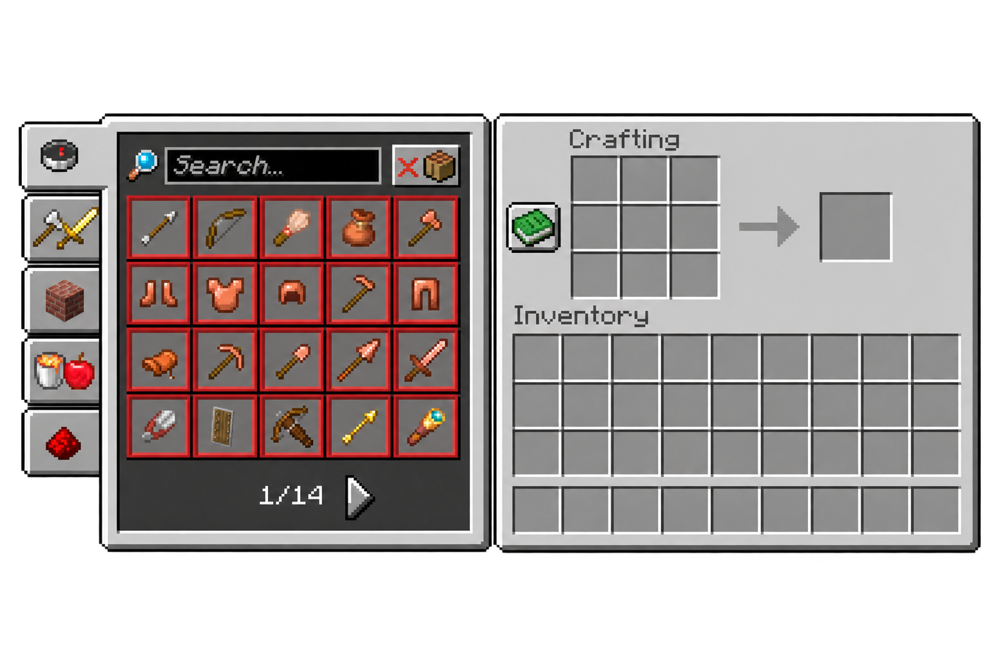

Forest Haven – Experienced
 CRAFTLEAF
CRAFTLEAF
En Crafting Table giver dig adgang til et 3 × 3 craftingfelt, hvor du kan kombinere materialer og lave redskaber, udstyr og byggedele.


De ni felter er der, hvor du placerer materialerne. Fordel dem efter en opskrift for at lave en bestemt genstand.
Den grønne bog er en hjælpende guide til crafting. Den viser opskrifter, de nødvendige materialer og deres placering. Har du materialerne i dit inventory, kan du vælge en opskrift for at placere dem automatisk.
Det enkelte felt til højre viser den genstand, du kan lave. Flyt den til dit inventory for at færdiggøre craftingen. Det bruger materialerne fra craftingfeltet.

Ved hjælp af opskriftbogen kan du søge efter en bestemt genstand eller bruge kategorierne til at finde en opskrift. Et filter lader dig kun vise opskrifter, du har materialer til.
Opskrifter låses op, efterhånden som du samler materialer og udforsker spillet. Bogen viser derfor ikke nødvendigvis alle opskrifter fra starten.
En Crafting Table er et arbejdsbord, der hjælper dig videre i Survival. Her laver du blandt andet hakker til minedrift, sværd til forsvar og ovne til at bearbejde materialer.
Du kan lave den af træplanker (Planks) fra alle træsorter og blande forskellige slags. Træstammer (Logs) skal først omdannes til planker. Typen af træet ændrer hverken arbejdsbordets udseende eller funktion.
Placér en i din base, og tag eventuelt en ekstra med på tur, så du kan lave redskaber undervejs.
En Crafting Table er et af dine første skridt mod at klare dig i Survival. Den gør det muligt at lave redskaber, så du kan samle ressourcer hurtigere, udstyr til at beskytte dig og byggedele til dit første hus. Derfor følger den dig fra de første træstammer til større byggeprojekter.
Nu er du klar til at bruge din Crafting Table og prøve nye opskrifter. Lad kreativiteten guide dig – god byggelyst!

Willow Manor – Easy

Pinecrest – Experienced

Dune Retreat – Easy

Woodhouse – Easy

TidewoodEasy
Willow ManorEasy

Willow CottageEasy
Forest HavenExperienced
PinecrestExperienced

Amber LoftExperienced
WoodhouseEasy
Dune RetreatEasy